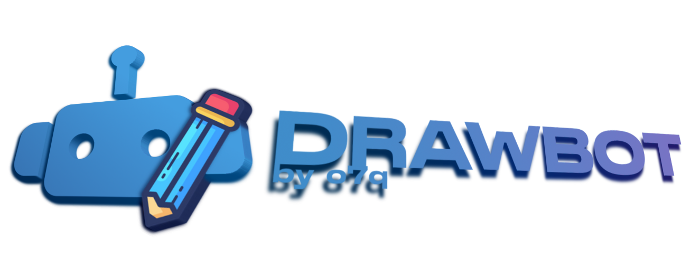
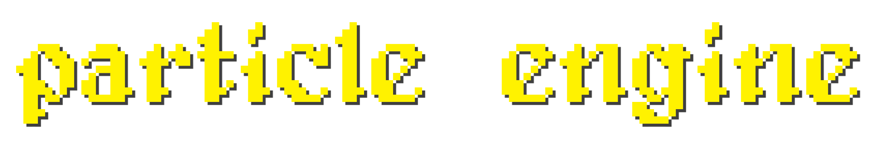

A lightweight GUI wrapper for yt-dlp and FFmpeg that allows you to quickly download videos, music, playlists, and more, from a wide variety of websites.

A robust GUI wrapper for FFmpeg that can swiftly process and convert virtually any media file.
A compact (offline) GUI media transcriber that enables you to search for local content based on its spoken words.

A lightweight command-line based batch renderer for Blender.

Remotely control Windows-based systems with a Discord bot from any platform.

A versatile drawing bot that works in nearly every game and program. (Gartic Phone, Skribbl, Jackbox, Paint, etc.)

A simple but highly customizable keyboard keystrokes visualizer.

A fast and simple, command-line based tool that allows you to turn images and videos into ASCII art.

A web based tool that allows you to easily convert HEX values into CSS filters.
Transfer styles and synthesize new images based on trained datasets.

A simple and lightweight GUI-based installation manager for Minecraft.

A highly-configurable Minecraft mod that scales damage and knockback with kinetic energy.

A server manager for Rust (the game).

An ultra-simple and lightweight command-line based backup tool.

A command-line based utility-box full of helpful networking commands.

A particle world simulator.